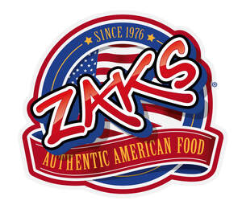
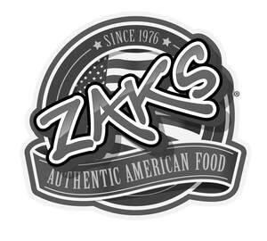

Trade Mark Journal No.2025/046 14 November 2025
UK00004219798 16 June 2025 (29,30,32,33,35,43)
Mark 1

Mark 2

- Class 29
- Meat, fish, poultry and game; Meat extracts; Preserved, frozen, dried and cooked fruits and vegetables; Jellies, jams, compotes; Eggs; Milk, cheese, butter, yogurt and other milk products; Oils and fats for food; Beans; Calamari; Cheese Cheese-based items; Coleslaw; Corn on the cob; Dairy products and dairy substitutes; Hamburgers; Meat and meat products; Milkshakes; Mushrooms, prepared; Pickles; Prepared meals consisting primarily of beef; Prepared meals consisting primarily of chicken; Prepared meals consisting primarily of meat; Prepared meals consisting primarily of pork; Prepared meals consisting primarily of poultry; Prepared meals consisting primarily of vegetarian foods; Prepared meals consisting primarily of vegan foods; Prepared meals consisting primarily of eggs; Prepared meals consisting primarily of fish; Prepared meals consisting primarily of seafood; Prepared meals consisting primarily of game; Prepared meals consisting primarily of vegetables; Prepared meals consisting primarily of nuts; Prepared meals, convenience food and savoury snacks; Processed fruits, fungi, vegetables, nuts and pulses; Sausages; Steaks of fish; Steaks of meat; Steaks of vegetables; Wings; Corn dogs; Salads.
- Class 30
- Coffee, tea, cocoa and substitutes therefor; Rice, pasta and noodles; Tapioca and sago; Flour and preparations made from cereals; Bread, pastries and confectionery; Chocolate; Ice cream, sorbets and other edible ices; Sugar, honey, treacle; Yeast, baking-powder; Salt, seasonings, spices, preserved herbs; Vinegar, sauces and other condiments; Ice [frozen water]; Bread; Brownies; Cakes; Cereals; Cheesecakes; Chips; Churros; Condiments; Convenience food and savoury snacks; Cookies; Fries; Garlic bread; Hamburger sandwiches; Hamburgers in buns; Hot dog sandwiches; Ice cream; Jacket potatoes; Nachos; Pancakes; Pies; Prepared meals containing [principally] pasta; Prepared meals containing [principally] potatoes; Prepared meals containing [principally] rice; Sandwiches; Sauces; Sausages in buns; Tater tots; Toast; Desserts.
- Class 32
- Beers; Non-alcoholic beverages; Mineral and aerated waters; Fruit beverages and fruit juices; Syrups and other preparations for making non-alcoholic beverages; Soft drinks; Smoothies; Juices; Non-alcoholic cocktails.
- Class 33
- Alcoholic beverages, except beers; Alcoholic preparations for making beverages; Cocktails; Wine; Liqueur coffee; Coffee-based liqueurs; Alcoholic coffee-based beverages.
- Class 35
- Advertising; Business management; Business administration; Office functions; Administration of loyalty rewards programs; Administration of the business affairs of franchises; Advertising services; Advice in the running of establishments as franchises; Advisory services relating to publicity for franchisees; Assistance in business management within the framework of a franchise contract; Assistance in franchised commercial business management; Assistance in product commercialization, within the framework of a franchise contract; Business administration services; Business advertising services relating to franchising; Business advice and consultancy relating to franchising; Business advice relating to franchising; Business advice relating to restaurant franchising; Business advisory services relating to franchising; Business advisory services relating to the establishment and operation of franchises; Business advisory services; Business assistance relating to franchising; Business assistance relating to the establishment of franchises; Business consultancy in relation to franchising; Business consultancy services associated with franchising restaurants, cafes, cafeterias, coffee shops, bars, restaurants, snack bars, catering or other establishment or facilities engaged in providing food or drinks; Business consultancy services associated with operating cafes, cafeterias, coffee shops, bars, restaurants, snack bars, catering or other establishment or facilities engaged in providing food or drinks; Business consultancy services; Business management advisory services relating to franchising; Business management assistance in the field of franchising; Business management assistance in the operation of restaurants; Business management of restaurants; Business operation of cafes, cafeterias, coffee shop, snack bars, catering, restaurants or other establishments or facilities engaged in providing food or drinks prepared for consumption; Dissemination of advertisements; Dissemination of advertising matter online; Dissemination of business information; Dissemination of commercial information; Electronic order processing; Management advisory services related to franchising; Marketing services in the field of restaurants; Marketing services; Online ordering services in the field of take-out and delivery of food and drink; Online advertisements; Online advertising on a computer network; Online ordering services; Ordering services for third parties; Procurement of goods on behalf of other businesses; Promoting the goods and services of others by means of a loyalty rewards card scheme; Providing assistance in the field of business management within the framework of a franchise contract; Providing assistance in the field of product commercialization within the framework of a franchise contract; Providing assistance in the management of franchised businesses; Provision of business advice relating to franchising; Provision of business information relating to franchising; Public relations services; Publicity services; Advertising services; Services rendered by a franchisor, namely, assistance in the running or management of industrial or commercial enterprises; Retail services, wholesale services, mail order services or internet retailing services in relation to Cutlery, Cardboard packaging, Paper serviettes, Paper bags, Plastic shopping bags, Stationery, Displays, stands and signage, non-metallic, Furniture, Dispensers for serviettes, Drinking straws, Tableware, Earthenware, Cups, Coffee cups, Paper cups, Cardboard cups, Textile serviettes, Clothing, Footwear, Headgear, Meat, fish, poultry and game, Meat extracts, Preserved, frozen, dried and cooked fruits and vegetables, Jellies, jams, compotes, Eggs, Milk, cheese, butter, yogurt and other milk products, Oils and fats for food, Beans, Calamari, Cheese Cheese-based items, Coleslaw, Corn on the cob, Dairy products and dairy substitutes, Hamburgers, Meat and meat products, Milkshakes, Mushrooms, prepared, Pickles, Prepared meals consisting primarily of beef, Prepared meals consisting primarily of chicken, Prepared meals consisting primarily of meat, Prepared meals consisting primarily of pork, Prepared meals consisting primarily of poultry, Prepared meals consisting primarily of vegetarian foods, Prepared meals consisting primarily of vegan foods, Prepared meals consisting primarily of eggs, Prepared meals consisting primarily of fish, Prepared meals consisting primarily of seafood, Prepared meals consisting primarily of game, Prepared meals consisting primarily of vegetables, Prepared meals consisting primarily of nuts, Prepared meals, convenience food and savoury snacks, Processed fruits, fungi, vegetables, nuts and pulses, Sausages, Steaks of fish, Steaks of meat, Steaks of vegetables, Wings, Foods, Beverages, Coffee, tea, cocoa and substitutes therefor, Rice, pasta and noodles, Tapioca and sago, Flour and preparations made from cereals, Bread, pastries and confectionery, Chocolate, Ice cream, sorbets and other edible ices, Sugar, honey, treacle, Yeast, baking-powder, Salt, seasonings, spices, preserved herbs, Vinegar, sauces and other condiments, Ice [frozen water], Bread, Brownies, Cakes, Cereals, Cheesecakes, Chips, Churros, Condiments, Convenience food and savoury snacks, Cookies, Corn dogs, Fries, Garlic bread, Hamburger sandwiches, Hamburgers in buns, Hot dog sandwiches, Ice cream, Jacket potatoes, Nachos, Pancakes, Pies, Prepared meals containing [principally] pasta, Prepared meals containing [principally] potatoes, Prepared meals containing [principally] rice, Sandwiches, Sauces, Sausages in buns, Tater tots, Toast, Beers, Non-alcoholic beverages, Mineral and aerated waters, Fruit beverages and fruit juices, Syrups and other preparations for making non-alcoholic beverages, Soft drinks, Smoothies, Juices, Alcoholic beverages, except beers, Alcoholic preparations for making beverages, Cocktails, Wine, Liqueur coffee, Coffee-based liqueurs, Alcoholic coffee-based beverage, Salads, Desserts, Non-alcoholic cocktails; Information, advice or consultancy services relating to the aforesaid.
- Class 43
- Advisory services relating to catering; Bar services; Booking of catering services; Business catering services; Cafe services; Cafes; Catering services; Coffee bar and coffee house services (provision of food and drink); Coffee shop services; Contract catering services; Food and drink catering; Information, advice and reservation services for the provision of food and drink; Mobile catering services; Provision of food and beverages; Provision of food and drink; Restaurant services; Information, advice or consultancy services relating to the aforesaid.
ZAKS (UK) Limited
Representative: Brand Protect Limited